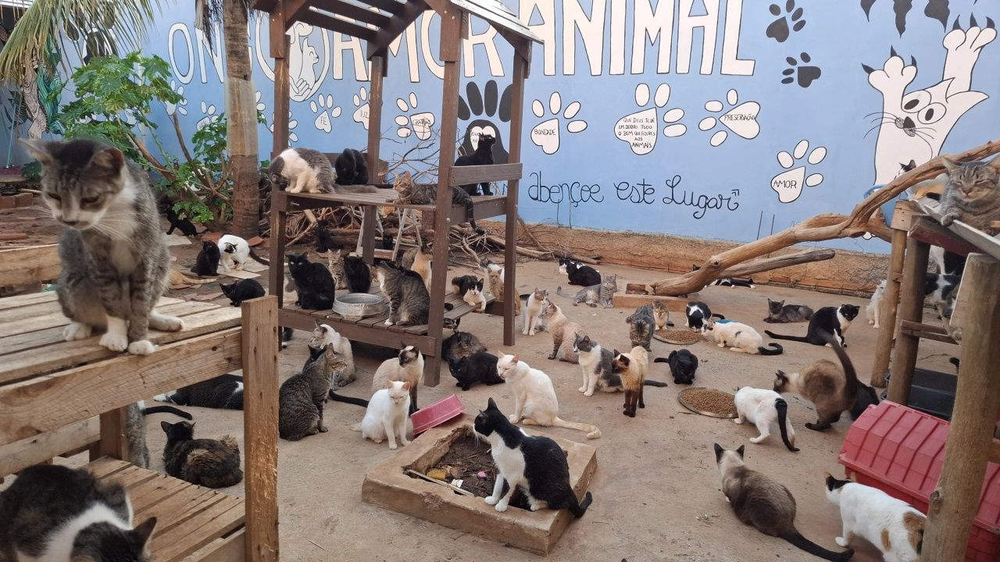

Somos uma organização dedicada ao resgate, cuidado e proteção de animais abandonados. Trabalhamos incansavelmente para garantir que cada animal tenha uma segunda chance em um lar amoroso.
Nossa equipe é formada por voluntários apaixonados por animais, que dedicam seu tempo e esforço para fazer a diferença na vida de cada um deles.
Além do resgate e adoção, também promovemos a conscientização sobre a importância da posse responsável e do respeito aos animais.

Conheça as pessoas que fazem essa obra acontecer todos os dias
Sua contribuição pode transformar vidas. Descubra como você pode ajudar!